BookTrust
UK book recommendations, reading programmes and resources for families, schools and libraries.
BookTrustFind children’s book recommendations, literacy resources, research networks and specialist picturebook collections.
UK book recommendations, reading programmes and resources for families, schools and libraries.
BookTrust
UK literacy research, classroom resources and reading-for-pleasure programmes.
National Literacy Trust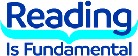
US children’s literacy charity with reading programmes and resources for families and educators.
Reading Is FundamentalBooklists, classroom resources and professional development for primary literacy.
CLPEA professional association for literacy education, with research, conferences and book awards.
UKLA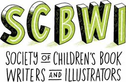
International professional organisation for children’s book writers, illustrators and translators. Its network offers events, professional development and opportunities to share work.
Visit SCBWIInternational network for children’s literature and reading, with national sections, awards and accessible-book catalogues.
IBBY collectionsThe British section of IBBY, with events and activities in children’s literature.
IBBY UK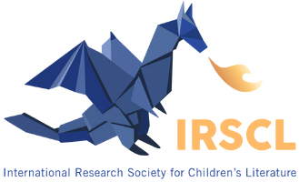
International research society with a biennial congress and information for scholars.
IRSCLIRSCL journal: International Research in Children’s Literature
Research network for young adult literature, media and culture.
YASA eventsAn academic network focused on the study of picturebooks and their forms, histories and readers.
Network website
Scholarly association for the study and teaching of children’s and young adult literature.
WebsiteChLA journals: Children’s Literature and Children’s Literature Association Quarterly
A professional community within the US National Council of Teachers of English, with resources for teaching literature and a research conference.
Website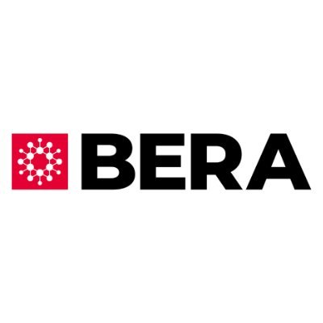
UK association for education research, with special interest groups and an annual conference.
WebsiteScottish network for education research, with research networks and an annual conference.
WebsiteUK professional association supporting inclusive education and SEND practice.
WebsiteNetwork of educational research associations across Europe.
WebsiteUS-based association with international participation in educational research.
WebsiteProfessional association for research on language and applied linguistics.
WebsiteA European picturebook project associated with Penni Cotton. This archived IBBYLink article describes the collection and its later development.
EPBC background (PDF)An Australian picturebook illustration initiative founded by Ann James and Ann Haddon. The National Centre for Australian Children’s Literature documents its history.
Books Illustrated background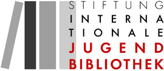
A European picturebook project associated with Penni Cotton. This archived IBBYLink article describes the collection and its later development.
EPBC background (PDF)An Australian picturebook illustration initiative founded by Ann James and Ann Haddon. The National Centre for Australian Children’s Literature documents its history.
Books Illustrated backgroundMunich-based international collection of children’s and youth literature, with exhibitions and research resources.
International Youth LibraryKent State University collection dedicated to picturebook art and scholarship.
Kent State collection informationResearch association with conferences, resources and links to specialist collections.
WebsiteNational organisation promoting Australian children’s literature and running the Book of the Year Awards.
Website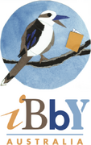
Australian section of IBBY, linking local children’s literature to international programmes.
Website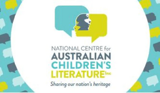
Research collection documenting Australian children’s books and illustration.
WebsiteNational professional association supporting primary English and literacy education through publications, classroom resources and professional learning.
Visit PETAA
A specialist institute supporting and documenting children’s literature research in Sweden.
WebsiteScholarly society for research on children’s and young adult literature, with publications and events.
Website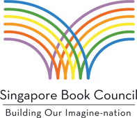
Programmes for writers, illustrators and readers, including the Asian Festival of Children’s Content.
Website
Japan’s IBBY section publishes recommendations and promotes Japanese children’s books internationally.
WebsiteJapanese scholarly society with information on its activities and publications.
WebsiteSouth Korea’s IBBY section, connecting children’s book professionals and promoting Korean children’s literature.
WebsiteChina’s IBBY section, with reading promotion and children’s literature activities.
WebsiteSpecialist research institute with children’s literature resources and a research bulletin.
Website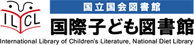
Specialist research institute with children’s literature resources and a research bulletin.
WebsiteJapan’s national specialist library for children’s literature.
WebsiteA South Korean scholarly association for children’s and young adult literature.
WebsiteA specialist children’s literature research institute in Taiwan.
WebsiteA national forum for children’s and youth literature, with reviews and events.
WebsiteNigeria’s national section of the International Board on Books for Young People.
Website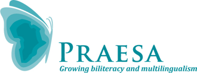
South African literacy development and multilingual children’s reading resources.
Website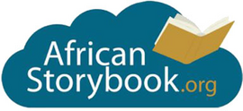
Openly licensed picture storybooks in African languages.
Website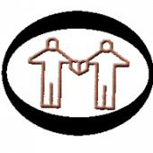
Reading promotion and library support in Ghana.
Website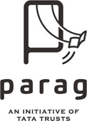
The India chapter of IBBY, hosted by the Tata Trusts’ Parag initiative.
Website
The Philippine IBBY section, promoting children’s books and reading.
Website
An IBBY national section supporting children’s literature and access to books in the UAE.
WebsiteMexico’s national IBBY section, active in children’s books and reading promotion.
Website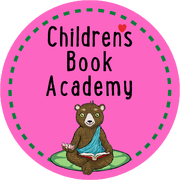
A course provider offering workshops and programmes on writing and illustrating children’s books.
WebsiteInterviews and galleries showing how illustrators develop picturebooks, from initial sketches to finished spreads.
Explore resourceInternational Youth Library recommendations for discovering books across languages and publishing markets.
Explore resourceInternational annotated selections including accessible formats and books about disability.
Explore resourceThe Picture Books for Older Readers database indexes Australian titles by theme, creator and curriculum connection.
Explore resourcePicturebook teaching materials and research designed for classroom use.
Explore resourceReviews and critical features on children’s books, including Dr Rebecca Butler’s writing on representation and inclusion.
Explore resource